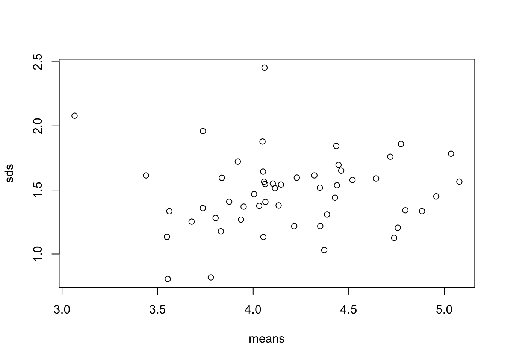

Code
library(tidyverse)We will be largely using the tidyverse suite of packages for data organisation, summarizing, and plotting; see https://www.tidyverse.org/.
Let’s load that package now: Remember if you have not installed it you will need to use install.packages() first.
library(tidyverse)For this workshop we will use some tidyverse built in datasets. Each dataset below shows the same values of four variables: country, year, population, and number of documented cases of TB (tuberculosis), but each dataset organizes the values in a different way. Take a look at these datasets by typing their names into a code chunk or directly into the console. You can also try your hand at the functions head() and summary().
table1# A tibble: 6 × 4
country year cases population
<chr> <dbl> <dbl> <dbl>
1 Afghanistan 1999 745 19987071
2 Afghanistan 2000 2666 20595360
3 Brazil 1999 37737 172006362
4 Brazil 2000 80488 174504898
5 China 1999 212258 1272915272
6 China 2000 213766 1280428583table2# A tibble: 12 × 4
country year type count
<chr> <dbl> <chr> <dbl>
1 Afghanistan 1999 cases 745
2 Afghanistan 1999 population 19987071
3 Afghanistan 2000 cases 2666
4 Afghanistan 2000 population 20595360
5 Brazil 1999 cases 37737
6 Brazil 1999 population 172006362
7 Brazil 2000 cases 80488
8 Brazil 2000 population 174504898
9 China 1999 cases 212258
10 China 1999 population 1272915272
11 China 2000 cases 213766
12 China 2000 population 1280428583table3# A tibble: 6 × 3
country year rate
<chr> <dbl> <chr>
1 Afghanistan 1999 745/19987071
2 Afghanistan 2000 2666/20595360
3 Brazil 1999 37737/172006362
4 Brazil 2000 80488/174504898
5 China 1999 212258/1272915272
6 China 2000 213766/1280428583For each of the sample tables, describe what each observation and each column represents. Which is the most tidy?
The piping operation is a fundamental aspect of computer programming. The semantics of pipes is taking the output from the left-hand side and passing it as input to the right-hand side.
The R package magrittr introduced the pipe operator %>% and can be pronounced as “then”. In RStudio windows/Linux versions, press Ctrl+Shift+M to insert the pipe operator. On a Mac, use Cmd+Shift+M.
R also has its own pipe, |>, which is an alternative to %>%. You will see both used in this course. If you want to change the pipe inserted automatically with Ctrl+Shift+M, find on the menu Tools > Global Options, then click on Code and check the box that says “Use Native Pipe Operator”.
Consider the study guide dataset rangitikei.txt (Recreational Use of the Rangitikei river). The first 10 rows of this dataset are shown below:
id loc time w.e cl wind temp river people vehicle
1 1 1 2 1 1 2 2 1 37 15
2 2 1 1 1 1 2 1 2 23 6
3 3 1 2 1 1 2 2 3 87 31
4 4 2 2 1 1 2 1 1 86 27
5 5 2 1 1 1 2 2 2 19 2
6 6 2 2 1 2 1 3 3 136 23
7 7 1 2 2 2 2 2 3 14 8
8 8 1 2 1 2 2 2 3 67 26
9 9 1 1 2 1 3 1 2 4 3
10 10 2 2 1 2 2 2 3 127 45Try the following examples after loading the rangitikei dataset.
select()
library(tidyverse)
new.data <- my.data |>
select(people, vehicle)
names(new.data)[1] "people" "vehicle"What does select() do?
my.data |>
select(people, vehicle) |> # select columns
ggplot() + # make a plot using those columns
aes(x=people, y=vehicle) +
geom_point()
We select two columns and create a scatter plot with the above commands.
Now try another function:
filter()
my.data |>
filter(wind==1) |>
select(people, vehicle) |>
ggplot() +
aes(x=people, y=vehicle) +
geom_point()
What does filter() do?
The above commands filter the data for the low wind days and plots vehicle against people. filter() subsets the data for all observations matching a specified criteria.
arrange()
my.data |>
filter(wind==1) |>
arrange(w.e) |>
select(w.e, people, vehicle) w.e people vehicle
1 1 136 23
2 1 50 22
3 1 100 31
4 1 470 122
5 2 22 11mutate()
Assume that a $10 levy is collected for each vehicle. We can create this new levy column as follows.
my.data |>
mutate(levy = vehicle*10) |>
select(people, levy) |>
ggplot() +
aes(x = people, y=levy) +
geom_point()
Note that the pipe operation was used to create a scatter plot using the newly created column.
summarise()
my.data |>
summarise(total = n(),
avg = mean(people)
) total avg
1 33 71.72727We obtain the selected summary measures namely the total and the mean number of people. Try-
my.data |>
filter(wind == 1) |>
summarise(total = n(),
avg = mean(people)
) total avg
1 5 155.6group_by()
We obtain the wind group-wise summaries below:
my.data |>
group_by(wind) |>
summarise(total=n(),
avg=mean(people))# A tibble: 3 × 3
wind total avg
<int> <int> <dbl>
1 1 5 156.
2 2 26 59.7
3 3 2 19 There are many more commands such as the transmute function which conserves the only the needed columns. Try
my.data |>
group_by(wind, w.e) |>
transmute(total=n(),
avg=mean(people))# A tibble: 33 × 4
# Groups: wind, w.e [6]
wind w.e total avg
<int> <int> <int> <dbl>
1 2 1 18 72.1
2 2 1 18 72.1
3 2 1 18 72.1
4 2 1 18 72.1
5 2 1 18 72.1
6 1 1 4 189
7 2 2 8 31.8
8 2 1 18 72.1
9 3 2 1 4
10 2 1 18 72.1
# ℹ 23 more rowsA simple frequency table is found using count(). Try-
my.data |>
group_by(wind, w.e) |>
count(temp)# A tibble: 10 × 4
# Groups: wind, w.e [6]
wind w.e temp n
<int> <int> <int> <int>
1 1 1 1 1
2 1 1 3 3
3 1 2 3 1
4 2 1 1 4
5 2 1 2 12
6 2 1 3 2
7 2 2 2 6
8 2 2 3 2
9 3 1 2 1
10 3 2 1 1my.data |>
group_by(wind, w.e) |>
count(temp, river)# A tibble: 16 × 5
# Groups: wind, w.e [6]
wind w.e temp river n
<int> <int> <int> <int> <int>
1 1 1 1 1 1
2 1 1 3 3 3
3 1 2 3 3 1
4 2 1 1 1 1
5 2 1 1 2 1
6 2 1 1 3 2
7 2 1 2 1 3
8 2 1 2 2 2
9 2 1 2 3 7
10 2 1 3 3 2
11 2 2 2 1 2
12 2 2 2 3 4
13 2 2 3 2 1
14 2 2 3 3 1
15 3 1 2 2 1
16 3 2 1 2 1The count() is useful to check the balanced nature of the data when many subgroups are involved.
Now let’s practice using these functions.
Using table1, compute rate of TB cases per 10,000 and the total cases per year
table1 |>
mutate(rate = cases / population * 10000)# A tibble: 6 × 5
country year cases population rate
<chr> <dbl> <dbl> <dbl> <dbl>
1 Afghanistan 1999 745 19987071 0.373
2 Afghanistan 2000 2666 20595360 1.29
3 Brazil 1999 37737 172006362 2.19
4 Brazil 2000 80488 174504898 4.61
5 China 1999 212258 1272915272 1.67
6 China 2000 213766 1280428583 1.67 table1 |>
group_by(year) |>
summarize(total_cases = sum(cases))# A tibble: 2 × 2
year total_cases
<dbl> <dbl>
1 1999 250740
2 2000 296920For table2, write pseudo-code for how you would perform the following actions. Sketch/describe how you would do these.
Extract the number of TB cases per country per year.
Extract the matching population per country per year.
Divide cases by population, and multiply by 10000.
Store back in the appropriate place.
We will now use the built in dataset on diamond price and measurements for some more exercises. See?diamonds more information.
Outliers are observations that are unusual; data points that don’t seem to fit the pattern. Sometimes outliers are data entry errors, sometimes they are simply values at the extremes that happened to be observed in this data collection, and other times they suggest important new discoveries.
Describe the distribution of the y variable from the diamonds dataset.
ggplot(diamonds, aes(x = y)) +
geom_histogram(binwidth = 0.5)The only evidence of outliers is the unusually wide limits on the x-axis.
There are so many observations in the common bins that the rare bins are very short, making it very difficult to see them (although maybe if you stare intently at 0 you’ll spot something). We can change the binwidth= to help with this. We can also zoom in on the y axis using coord_cartesian().
ggplot(diamonds, aes(x = y)) +
geom_histogram(binwidth = 0.5) +
coord_cartesian(ylim = c(0, 50)) # also has an xlim() optionMake a new dataset that includes these unusual values using dplyr.
unusual <- diamonds |>
filter(y < 3 | y > 20) |>
select(price, x, y, z) |>
arrange(y)
unusual# A tibble: 9 × 4
price x y z
<int> <dbl> <dbl> <dbl>
1 5139 0 0 0
2 6381 0 0 0
3 12800 0 0 0
4 15686 0 0 0
5 18034 0 0 0
6 2130 0 0 0
7 2130 0 0 0
8 2075 5.15 31.8 5.12
9 12210 8.09 58.9 8.06How many diamonds are 0.99 carat? How many are 1 carat? What do you think is the cause of the difference?
# your code goes hereWhat does na.rm = TRUE do in mean() and sum()?
# your code goes hereMost real analyses will require at least a little tidying. You’ll begin by figuring out what the underlying variables and observations are. Sometimes this is easy; other times you’ll need to consult with the people who originally generated the data. Next, you’ll pivot your data into a tidy form, with variables in the columns and observations in the rows.
The billboard dataset records the billboard rank of songs in the year 2000:
billboard# A tibble: 317 × 79
artist track date.entered wk1 wk2 wk3 wk4 wk5 wk6 wk7 wk8
<chr> <chr> <date> <dbl> <dbl> <dbl> <dbl> <dbl> <dbl> <dbl> <dbl>
1 2 Pac Baby… 2000-02-26 87 82 72 77 87 94 99 NA
2 2Ge+her The … 2000-09-02 91 87 92 NA NA NA NA NA
3 3 Doors D… Kryp… 2000-04-08 81 70 68 67 66 57 54 53
4 3 Doors D… Loser 2000-10-21 76 76 72 69 67 65 55 59
5 504 Boyz Wobb… 2000-04-15 57 34 25 17 17 31 36 49
6 98^0 Give… 2000-08-19 51 39 34 26 26 19 2 2
7 A*Teens Danc… 2000-07-08 97 97 96 95 100 NA NA NA
8 Aaliyah I Do… 2000-01-29 84 62 51 41 38 35 35 38
9 Aaliyah Try … 2000-03-18 59 53 38 28 21 18 16 14
10 Adams, Yo… Open… 2000-08-26 76 76 74 69 68 67 61 58
# ℹ 307 more rows
# ℹ 68 more variables: wk9 <dbl>, wk10 <dbl>, wk11 <dbl>, wk12 <dbl>,
# wk13 <dbl>, wk14 <dbl>, wk15 <dbl>, wk16 <dbl>, wk17 <dbl>, wk18 <dbl>,
# wk19 <dbl>, wk20 <dbl>, wk21 <dbl>, wk22 <dbl>, wk23 <dbl>, wk24 <dbl>,
# wk25 <dbl>, wk26 <dbl>, wk27 <dbl>, wk28 <dbl>, wk29 <dbl>, wk30 <dbl>,
# wk31 <dbl>, wk32 <dbl>, wk33 <dbl>, wk34 <dbl>, wk35 <dbl>, wk36 <dbl>,
# wk37 <dbl>, wk38 <dbl>, wk39 <dbl>, wk40 <dbl>, wk41 <dbl>, wk42 <dbl>, …In this dataset, each observation is a song. The first three columns (artist, track and date.entered) are variables that describe the song. Then we have 76 columns (wk1-wk76) that describe the rank of the song in each week. Here, the column names are one variable (the week) and the cell values are another (the rank).
Use pivot_longer() to tidy this data
# your code goes hereTwo tables can be connected through a pair of keys, within each table.
Every join involves a pair of keys: a primary key and a foreign key. A primary key is a variable or set of variables that uniquely identifies each observation. When more than one variable is needed, the key is called a compound key.
There are four types of joins, we will illustrate them using a simple example:
First lets make some data:
df1 <- tibble(x = c(1, 2), y = 2:1)
df2 <- tibble(x = c(3, 1), a = 10, b = "a")Now join the two datasets using the different join functions:
df1 %>% inner_join(df2) Joining with `by = join_by(x)`# A tibble: 1 × 4
x y a b
<dbl> <int> <dbl> <chr>
1 1 2 10 a df1 %>% left_join(df2)Joining with `by = join_by(x)`# A tibble: 2 × 4
x y a b
<dbl> <int> <dbl> <chr>
1 1 2 10 a
2 2 1 NA <NA> df1 %>% right_join(df2)Joining with `by = join_by(x)`# A tibble: 2 × 4
x y a b
<dbl> <int> <dbl> <chr>
1 1 2 10 a
2 3 NA 10 a df2 %>% left_join(df1)Joining with `by = join_by(x)`# A tibble: 2 × 4
x a b y
<dbl> <dbl> <chr> <int>
1 3 10 a NA
2 1 10 a 2df1 %>% full_join(df2)Joining with `by = join_by(x)`# A tibble: 3 × 4
x y a b
<dbl> <int> <dbl> <chr>
1 1 2 10 a
2 2 1 NA <NA>
3 3 NA 10 a What are the differences between the join functions?
By default, left_join() will use all variables that appear in both data frames as the join key, but it doesn’t always work.
For example lets look at some airline data:
library(nycflights13) # data package
flights2 <- flights |>
select(year, time_hour, origin, dest, tailnum, carrier)
flights2# A tibble: 336,776 × 6
year time_hour origin dest tailnum carrier
<int> <dttm> <chr> <chr> <chr> <chr>
1 2013 2013-01-01 05:00:00 EWR IAH N14228 UA
2 2013 2013-01-01 05:00:00 LGA IAH N24211 UA
3 2013 2013-01-01 05:00:00 JFK MIA N619AA AA
4 2013 2013-01-01 05:00:00 JFK BQN N804JB B6
5 2013 2013-01-01 06:00:00 LGA ATL N668DN DL
6 2013 2013-01-01 05:00:00 EWR ORD N39463 UA
7 2013 2013-01-01 06:00:00 EWR FLL N516JB B6
8 2013 2013-01-01 06:00:00 LGA IAD N829AS EV
9 2013 2013-01-01 06:00:00 JFK MCO N593JB B6
10 2013 2013-01-01 06:00:00 LGA ORD N3ALAA AA
# ℹ 336,766 more rowsplanes# A tibble: 3,322 × 9
tailnum year type manufacturer model engines seats speed engine
<chr> <int> <chr> <chr> <chr> <int> <int> <int> <chr>
1 N10156 2004 Fixed wing multi… EMBRAER EMB-… 2 55 NA Turbo…
2 N102UW 1998 Fixed wing multi… AIRBUS INDU… A320… 2 182 NA Turbo…
3 N103US 1999 Fixed wing multi… AIRBUS INDU… A320… 2 182 NA Turbo…
4 N104UW 1999 Fixed wing multi… AIRBUS INDU… A320… 2 182 NA Turbo…
5 N10575 2002 Fixed wing multi… EMBRAER EMB-… 2 55 NA Turbo…
6 N105UW 1999 Fixed wing multi… AIRBUS INDU… A320… 2 182 NA Turbo…
7 N107US 1999 Fixed wing multi… AIRBUS INDU… A320… 2 182 NA Turbo…
8 N108UW 1999 Fixed wing multi… AIRBUS INDU… A320… 2 182 NA Turbo…
9 N109UW 1999 Fixed wing multi… AIRBUS INDU… A320… 2 182 NA Turbo…
10 N110UW 1999 Fixed wing multi… AIRBUS INDU… A320… 2 182 NA Turbo…
# ℹ 3,312 more rowsWe are going to try to going flight data to data about types of planes
flights2 |>
left_join(planes)Joining with `by = join_by(year, tailnum)`# A tibble: 336,776 × 13
year time_hour origin dest tailnum carrier type manufacturer
<int> <dttm> <chr> <chr> <chr> <chr> <chr> <chr>
1 2013 2013-01-01 05:00:00 EWR IAH N14228 UA <NA> <NA>
2 2013 2013-01-01 05:00:00 LGA IAH N24211 UA <NA> <NA>
3 2013 2013-01-01 05:00:00 JFK MIA N619AA AA <NA> <NA>
4 2013 2013-01-01 05:00:00 JFK BQN N804JB B6 <NA> <NA>
5 2013 2013-01-01 06:00:00 LGA ATL N668DN DL <NA> <NA>
6 2013 2013-01-01 05:00:00 EWR ORD N39463 UA <NA> <NA>
7 2013 2013-01-01 06:00:00 EWR FLL N516JB B6 <NA> <NA>
8 2013 2013-01-01 06:00:00 LGA IAD N829AS EV <NA> <NA>
9 2013 2013-01-01 06:00:00 JFK MCO N593JB B6 <NA> <NA>
10 2013 2013-01-01 06:00:00 LGA ORD N3ALAA AA <NA> <NA>
# ℹ 336,766 more rows
# ℹ 5 more variables: model <chr>, engines <int>, seats <int>, speed <int>,
# engine <chr>We get a lot of missing matches because our join is trying to use tailnum and year as a compound key. Both flights and planes have a year column but they mean different things: flights$year is the year the flight occurred and planes$year is the year the plane was built.
Since these represent different types of data and we might want to keep both, we can be explicit about how to join the two data tables:
flights2 |>
left_join(planes, join_by(tailnum))# A tibble: 336,776 × 14
year.x time_hour origin dest tailnum carrier year.y type
<int> <dttm> <chr> <chr> <chr> <chr> <int> <chr>
1 2013 2013-01-01 05:00:00 EWR IAH N14228 UA 1999 Fixed wing mu…
2 2013 2013-01-01 05:00:00 LGA IAH N24211 UA 1998 Fixed wing mu…
3 2013 2013-01-01 05:00:00 JFK MIA N619AA AA 1990 Fixed wing mu…
4 2013 2013-01-01 05:00:00 JFK BQN N804JB B6 2012 Fixed wing mu…
5 2013 2013-01-01 06:00:00 LGA ATL N668DN DL 1991 Fixed wing mu…
6 2013 2013-01-01 05:00:00 EWR ORD N39463 UA 2012 Fixed wing mu…
7 2013 2013-01-01 06:00:00 EWR FLL N516JB B6 2000 Fixed wing mu…
8 2013 2013-01-01 06:00:00 LGA IAD N829AS EV 1998 Fixed wing mu…
9 2013 2013-01-01 06:00:00 JFK MCO N593JB B6 2004 Fixed wing mu…
10 2013 2013-01-01 06:00:00 LGA ORD N3ALAA AA NA <NA>
# ℹ 336,766 more rows
# ℹ 6 more variables: manufacturer <chr>, model <chr>, engines <int>,
# seats <int>, speed <int>, engine <chr>Now by default there is a year.x and year.y coming from the flights and planes data respectively. You can change this using the suffix argument in join or by renaming the columns after the join.
Imagine you’ve found the top 10 most popular destinations using this code:
top_dest <- flights2 |>
count(dest, sort = TRUE) |>
head(10)How can you find all flights to those destinations?
# your code goes hereWhat do the tail numbers that don’t have a matching record in planes have in common? (Hint: one variable explains ~90% of the problems.)
Sometimes you want to add a new variable to your data based on existing variables.
dplyr’s case_when() is inspired by SQL’s CASE statement and provides a flexible way of performing different computations for different conditions. It has a special syntax that unfortunately looks like nothing else you’ll use in the tidyverse. It takes pairs that look like condition ~ output. condition must be a logical vector; when it’s TRUE, output will be used.
This can take the place of if_else() statements.
For example:
flights |>
mutate(
status = case_when( # make a new variable status based on the flights arrival delay
is.na(arr_delay) ~ "cancelled",
arr_delay < -30 ~ "very early",
arr_delay < -15 ~ "early",
abs(arr_delay) <= 15 ~ "on time",
arr_delay < 60 ~ "late",
arr_delay < Inf ~ "very late",
),
.keep = "used"
)# A tibble: 336,776 × 2
arr_delay status
<dbl> <chr>
1 11 on time
2 20 late
3 33 late
4 -18 early
5 -25 early
6 12 on time
7 19 late
8 -14 on time
9 -8 on time
10 8 on time
# ℹ 336,766 more rowsWrite a case_when() statement that uses the month and day columns from flights to label a selection of important US holidays (e.g., New Years Day, 4th of July, Thanksgiving, and Christmas). First create a logical column that is either TRUE or FALSE, and then create a character column that either gives the name of the holiday or is NA.